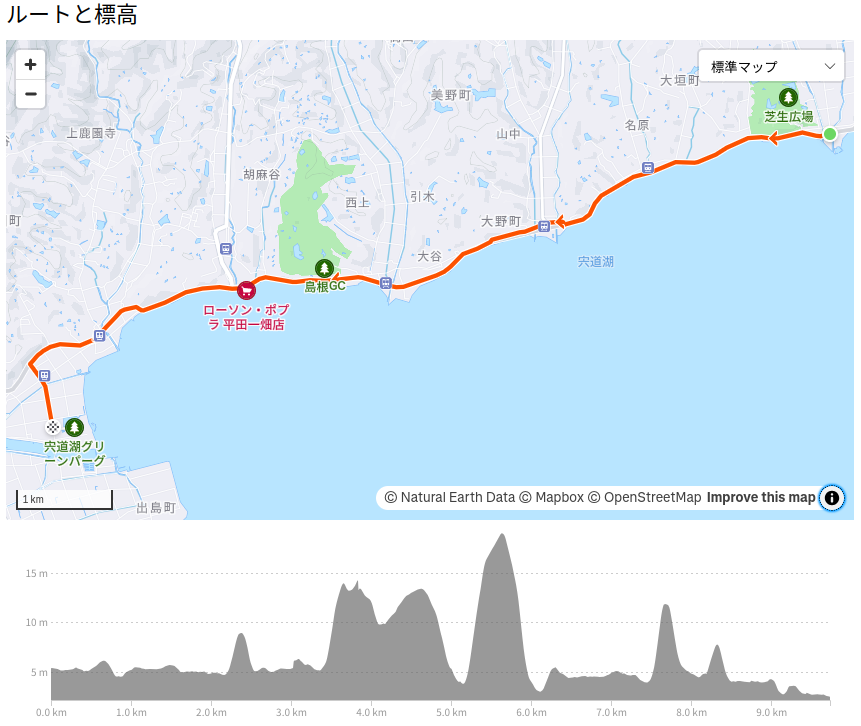

お散歩カメラ 2024-11-16

立冬過ぎて朝晩が寒くなって通勤にパーカが離せなくなり，夏用グローブもそろそろお終いな今日この頃，皆様いかがお過ごしでしょうか。
実は土曜日は休日出勤の予定で読書会も泣く泣くキャンセルしたのに休日出勤もキャンセルに orz よし！ じゃあ今日はチャリで遠出すっか！
朝から曇ってるけど午後からは晴れる予報。 風はほぼ無風。 というわけで，この週末も無事サイクリング日和となった。 今回は宍道湖北岸の国道431号線を出雲方面にどこまで行けるか試してみようかと。
道の駅「秋鹿なぎさ公園」で昼食
週末なので温泉に行きたいところではあるが，温泉に行くと半日潰れるので，今回は（用事を消化しつつ）まずは道の駅「秋鹿なぎさ公園」を目指す。 バードウォッチングや紅葉狩りを楽しみながらのんびり移動。
道の駅「秋鹿なぎさ公園」にお昼前に到着。 ちょっと早いけど腹ごしらえしておく。
味噌汁はしじみ汁。 そうだよなー。 松江地元でもしじみ汁は普通こんな感じだよな。 実家のしじみ汁は何故かしじみ山盛りなんだよなー。 しじみ汁は嫌いじゃないけど，学生時代は「朝は忙しいのに」と思いながら必死でしじみの身を食べていた。
ちなみに道の駅「秋鹿なぎさ公園」ではお土産用のしじみの佃煮とか売ってる。 あと地元農家の野菜とか。
島根県立宍道湖自然館ゴビウスへ行こう
お腹が落ち着いたところで道の駅から国道431号線を更に西に進む。 ぶっちゃけ431号線は道幅が狭い割に車の流量が多く自転車に優しくないのだが（ストリートビューで確認する限り）道の駅以西は自転車通行可な歩道があるみたいなので，たぶん行けるかなぁと。
今回の最終目標は「島根県立宍道湖自然館ゴビウス」だけど，チャリンコで進むのが無理そうなら途中で引き返すのもありということで。 コースはこんな感じ。

10kmほどの道のり。 アップダウンはほぼなし。 せめて出雲市との市境までは行ってみたい …と思ってたら，あっさり市境に辿り着く。
これの写真を撮ってたら電車もやってくる。
よしよし。 タイミングよかったね。
途中から国道431号線の歩道がなくなったため，松江杵築往還（多分？）に移って先に進みゴビウスに到着 …したのだが（広い駐車場はあるけど）駐輪場が見つからない。 あちこち歩き回ってゴビウスの建物の裏手（南側）に小さな駐輪場を発見した。 職員用かなぁ。 まぁ，いいや。 ここに停めよう。
というわけで，ようやく到着。
ゴビウス & グリーンパーク
ゴビウスの入館料は大人500円，小中高校生200円，それ以下は無料になる。 都会にあるどデカい水族館を想像するとがっかりするかもしれないのでご注意を。
ゴビウスの売りは中海&宍道湖の水棲生物を中心に飼育・展示されていることで，しかも子供でも見やすいように水槽の位置が低めに設置されているものが多い気がする。 このおかげかどうか分からないが親子連れの客がめっさ多い。
たとえば入口付近に「ゴズ」がいた（館内は写真撮影可だがフラッシュはNG）。
ゴズはこちらでの呼び名で，いわゆるマハゼのこと。 これのラテン語名が gobius で水族館の名称になっている。 ちなみに英語名は goby でマスコットキャラ「ゴビィ」の元ネタになってるらしい。 私が子供の頃はアホほどいて私のような釣り下手でも釣れるチョロい魚のイメージだった（笑）
隣には，みんな大好き，宍道湖七珍1 のひとつシラウオもいた。
こういうのを見ると「美味そう」と思ってしまう。 シラウオの卵とじのお吸い物が大好き！
ちょっとインパクトがあったのがこれ。
いやぁ！ 😱 ミズクラゲがみっしり詰まってる。 ちょっとしたホラーだろ，これ。 と言いながら嬉々としてシャッターを切る私。
絶滅危惧種の飼育・展示もあった。
こっちはラムサール条約の解説エリア。
宍道湖と中海は2005年にラムサール条約湿地に登録されたらしい。
ゴビウスの展示を見終わったあとは隣りにある宍道湖グリーンパークに行ってみる。
顔がこぇーよ（笑）
こちらでも紅葉が始まっている。
野鳥観察舎発見。
この中にペンギンミュージアムなるものがあるらしい。
事前に情報を仕入れずに見たので「販促会場？」と思ったのは内緒である（笑） 本物のペンギンを見たければ松江フォーゲルパークに行きませう。
野鳥観察舎の2階に上がって宍道湖方面を眺めてみる。 備え付けの望遠鏡は子供が専有してるので，自前の望遠鏡コンデジで眺める。
（35mm版一眼レフで）800mm望遠レンズ相当の倍率だが，これで精一杯。 ガチで写真撮るなら1,000mm以上のレンズでちゃんと三脚据えてやらないとダメなんだろうな。
帰りましょう
ひととおり遊んだので帰ろうか。
この日は満月で平安時代に藤原道長の詠んだ『望月の歌』とほぼ同じ月なんだそうだ。
でも全然晴れないぽいので，月の写真を撮るのは諦めるかなぁ。 大人しく帰るか。
参考

- Canon コンパクトデジタルカメラ PowerShot ZOOM 写真と動画が撮れる望遠鏡 PSZOOM
- キヤノン (Release 2020-12-10)
- エレクトロニクス
- B08L4WKDZ7 (ASIN), 4549292179675 (EAN)
- 評価
望遠鏡型コンパクトデジカメ。メモリと充電器（要 Power Delivery）は別に用意する必要がある。使い勝手はまぁまぁ。

- GARMIN(ガーミン)Edge Explore 2 Power サイクルコンピューター【日本正規品】
- ガーミン(GARMIN) (Release 2022-09-22)
- スポーツ用品
- B0BD7FGVR6 (ASIN), 0753759310660 (EAN), 753759310660 (UPC)
- 評価
Garmin 製のルート探索・ナビゲーション特化のサイコン。タッチパネル助かる。充電ポートは USB-C (not PD)。また別売りの変換ケーブルを使いモバイルバッテリからパワーマウント経由で給電することもできる。ライドタイプが「ロード」「屋内」「グラベル」の3種類しかない。 Live Segment 非対応。

- シマノ(SHIMANO) サイクリンググローブ EXPLORERグローブ 2023年モデル ネイビーL 手の周りサイズ目安:22.9-24.8㎝
- シマノ(SHIMANO)
- スポーツ用品
- B0BVNVW1W5 (ASIN), 4550170308131 (EAN)
- 評価
夏用のサイクリンググローブ。今まで使ってたのがボロボロになったので試しに買ってみた。着け心地よく違和感はない。手の甲の部分で上手く熱を逃している感じ。安売り中で安く買えた。サイクルグローブは基本的に手洗い。洗濯機の手洗いコースでもOKだが漂白剤・柔軟剤はNG。

- まつたけダンス
- 儒烏風亭らでん (メインアーティスト)
- cover corp. 2024-11-14 (Release 2024-11-14)
- MP3 ダウンロード
- B0DMVBX6WC (ASIN)
- 評価
-
宍道湖七珍とはスズキ，シラウオ，コイ，ウナギ，（モロゲ）エビ，アマサギ，シジミのこと。今では採れにくくなったなったもの（県外から仕入れていることも多い）や庶民の口に入りにくくなったものも多い。 ↩︎